Gesetzliche Grundlage
Alle Unternehmer, die Waren an Geschäftspartner in anderen Mitgliedstaaten der europäischen Union liefern oder verbringen, müssen eine Zusammenfassende Meldung über innergemeinschaftliche Lieferungen und Leistungen - zusätzlich zu allfälligen Umsatzsteuervoranmeldungen und neben der jährlichen Umsatzsteuererklärung - einreichen. Die ZM war bis zum 4. Quartal 2005 für ein Kalendervierteljahr abzugeben. Ab Jänner 2006 ist die Zusammenfassende Meldung entweder monatlich oder vierteljährlich - abhängig vom Voranmeldezeitraum (UVA) laut Steuerakt - zu übermitteln (FinanzOnline) bzw. beim zuständigen Finanzamt abzugeben. Erfolgt eine Änderung des Voranmeldezeitraumes, so passt sich der ZM-Meldezeitraum automatisch an. Die Zusammenfassung mehrerer Meldezeiträume (Monate oder Quartale) in einer ZM ist nicht zulässig.
Die Auswertung der Zusammenfassenden Meldung wird im Menüpunkt...
1 WinLine FIBU
1 Auswertungen
1 Steuermeldungen
1 Zusammenfassende Meldung
… ausgegeben.
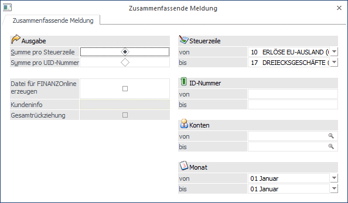
Ø Summe pro Steuerzeile/UID-Nummer
Bei Ausgabe der Zusammenfassenden Meldung in "Listenform" kann gewählt werden, ob die Werte pro Steuerzeile oder pro UID-Nr. summiert werden sollen.
Beispiel
Das Konto 230T050 wird mit der Steuerzeile 3 und der Steuerzeile 10 bebucht.
- Mit der Option "Summe pro Steuerzeile" werden für das Konto (bzw. für die UID-Nr.) 2 Zeilen ausgewiesen.
- Mit der Option "Summe pro UID-Nr." nur eine Zeile
Ø Monat von - bis
Selektion des Beginn und Abschlussmonat des gewünschten Quartals.
Ø Steuerzeile von - bis
Selektion der auszuwertenden Steuerzeilen (lt. Unternehmensstamm), die für die Buchung der Erlöse in übriges Gemeinschaftsgebiet verwendet wurde (im Demomandanten z.B. die Zeile 10 - Exporterlöse 0%).
Es werden nur die Steuerzeilen vorgeschlagen und für die Ausgabe der ZM herangezogen, bei denen im Unternehmensstamm die Checkbox "Zusammenfassende Meldung" aktiviert ist.
Ø ID Nummer
Eingabe der ersten und letzten Umsatzsteueridentifikationsnummer, die in die Auswertung mit einbezogen werden soll (soll kein bestimmter Bereich selektiert werden, kann der Eintrag leer gelassen werden).
Die ID-Nummer wird im Personenkontenstamm hinterlegt.
Ø Kontenbereich
Selektieren Sie den Kontenbereich, der in die Auswertung einbezogen werden soll. Wird keine Selektion getroffen, dann werden automatisch alle Konten in diese Auswertung einbezogen.
Meldepflichtig, laut Anhang zum Umsatzsteuergesetz 1994 (Binnenmarktregelung) - Rechtslage ab 01.01.2010 - sind:
ü Meldepflichtig sind Unternehmer (§ 2 UStG 1994), die während eines Meldezeitraumes innergemeinschaftliche Lieferungen (innergemeinschaftliche Verbringungen) und im übrigen Gemeinschaftsgebiet steuerpflichtige sonstige Leistungen, für die der Leistungsempfänger nach Art. 196 MWSt-RL 2006/112/EG idF Richtlinie 2008/8/EG die Steuer schuldet, ausgeführt haben. Eine ZM haben auch Unternehmer abzugeben, die als Erwerber bei einem Dreiecksgeschäft gemäß Art. 25 UStG 1994 steuerpflichtige Lieferungen im Meldezeitraum getätigt haben. Als Unternehmer gelten auch nichtselbständige juristische Personen iSd § 2 Abs. 2 Z 2 UStG 1994 (Organgesellschaften), sofern sie eine eigene UID haben (siehe Rz 4342).
ü Führen pauschalierte Land- und Forstwirte innergemeinschaftliche Lieferungen aus, so müssen diese ebenfalls eine ZM abgeben, obwohl diese Umsätze nicht steuerbefreit sind.
ü Für Meldezeiträume, in denen keine innergemeinschaftlichen Lieferungen oder im übrigen Gemeinschaftsgebiet steuerpflichtige sonstige Leistungen, für die der Leistungsempfänger nach Art. 196 MWSt-RL 2006/112/EG idF Richtlinie 2008/8/EG die Steuer schuldet, ausgeführt wurden, sind keine ZM abzugeben, außer der Unternehmer wird von der Abgabenbehörde zur Abgabe einer ZM aufgefordert.
Gilt nur für Österreich:
Wird das Länderkennzeichen in den FIBU-Parametern auf "Österreich" gesetzt, so steht im Fenster "Zusammenfassende Meldung" die Checkbox "Datei für FINANZOnline erzeugen" für die Erzeugung dieser zur Verfügung.
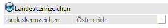
Ø Datei für FINANZOnline erzeugen
Wird diese Option aktiviert, wird eine XML-Datei erzeugt, die in weiterer Folge elektronisch an die "FINANZOnline" übermittelt werden kann. Die Datei, die bei der Ausgabe erzeugt wird, bekommt den Namen U13_Mandantennummer_Wirtschaftsjahr_vonMonat-bisMonat.XML (z.B. U13_300M_2004_1-3.XML steht für die Zusammenfassende Meldung des Mandanten 300M für die Monate Jänner bis März). Diese Datei wird automatisch in das Verzeichnis "FINANZOnline" gespeichert, das - sofern noch nicht vorhanden - als Unterverzeichnis vom aktuellen Programmverzeichnis angelegt wird.
Um diese Datei auch in "lesbarer" Form darzustellen, kann der "ZM-XML-Viewer" verwendet werden.
Konsignationslager in der ZM
Ab 1.1.2020 sind Meldungen in Zusammenhang mit der Beförderung oder Versendung in ein Konsignationslager ausschließlich übers FinanzOnline durchzuführen. Die Meldung von Umsätzen in Zusammenhang mit der Konsignationslager-Regelung erfolgt unter Angabe des entsprechenden Konsignationslagercodes. Für das Verbringen in ein Konsignationslager stehen folgende Kennzeichnungen zur Verfügung:
ü KL-Code 1 für den Rückversand
ü KL-Code 2 für Storno Meldungen und
ü KL-Code 3 für einen Erwerberwechsel
Ein Wert bzw. eine Bemessungsgrundlage sind im Rahmen der Konsignationslager-Regelung nicht in der
Zusammenfassenden Meldung anzuführen. Der Unternehmer hat jedoch die UID des geplanten Erwerbers - bzw. bei einem Erwerberwechsel (KL-Code 3) die UID des ursprünglichen und des neuen geplanten Erwerbers - anzugeben. Werden Waren, die im Rahmen der Konsignationslager-Regelung verbracht wurden, letztlich an den geplanten Erwerber geliefert, ist diese Lieferung als innergemeinschaftliche Lieferung in die Zusammenfassende Meldung aufzunehmen.
Beim Aktivieren der Checkbox 'Datei für FinanzOnline erzeugen' wird das Fenster entsprechend für die Eingabe der notwendigen Daten für das Konsignationslager erweitert.
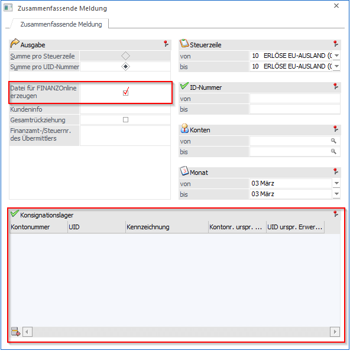
In der erweiterten Tabelle können die entsprechenden Daten erfasst werden, dabei stehen folgende Spalten zur Verfügung:
Ø Kontonummer
In diesem Feld kann eine Kontonummer eingegeben werden, dabei wird die Spalte 'UID' automatisch mit der UID-Nummer aus dem Personenkontostamm gefüllt. Ein Editieren der UID-Nummer ist somit nicht möglich.
Ø UID
In diesem Feld kann eine UID-Nummer manuell eingetragen werden, wenn die Spalte 'Kontonummer' leer ist. Wurde eine manuelle Eingabe getätigt, so kann keine Kontonummer eingetragen werden.
Ø Kennzeichnung
Über eine Auswahllistbox können die entsprechenden Konsignationslager-Codes ausgewählt werden:
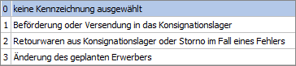
Hinweis
Die Kennzeichnung '0 keine Kennzeichnung ausgewählt' ist automatisch für neue Zeilen vorbelegt.
Ø Kontonr. urspr. Erwerber
In diesem Feld kann eine Kontonummer des ursprünglichen Erwerbers eingegeben werden, dabei wird die Spalte 'UID urspr. Erwerber' automatisch mit der UID-Nummer aus dem Personenkontostamm gefüllt. Ein Editieren der UID-Nummer des ursprünglichen Erwerbers ist nicht möglich. Die Spalte steht nur bei der Kennzeichnung '3 Änderung des geplanten Erwerbers' zur Verfügung.
Ø UID-Nummer urspr. Erwerber
In diesem Feld kann eine UID-Nummer des ursprünglichen Erwerbers manuell eingetragen werden, wenn die Spalte 'Kontonr. urspr. Erwerber' leer ist. Wurde eine manuelle Eingabe getätigt, so kann keine Kontonummer des ursprünglichen Erwerbers eingetragen werden. Die Spalte steht nur bei der Kennzeichnung '3 Änderung des geplanten Erwerbers' zur Verfügung.
Tabellenbuttons
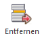
Ø Entfernen
Mit dem Entfernen-Button können Zeilen aus der Tabelle gelöscht werden.
Ausgabe ZM Konsignationslager
Bei der Ausgabe der Zusammenfassenden Meldung werden die Eingaben in der Konsignationslager-Tabelle geprüft, d.h. in jeder gemeldeten Zeile muss entweder eine gültige Kontonummer mit eingetragener UID-Nummer oder nur eine UID-Nummer eingetragen und eine Kennzeichnung ausgewählt sein. Beim Erzeugen der FinanzOnline- bzw. XML-Datei werden die entsprechenden Daten für das Konsignationslager in die XML-Datei geschrieben.
Die erfassten Einträge für das Konsignationslager werden pro Zeitraum gespeichert und können entsprechend geladen werden.
Hinweis
Bei der Ausgabe am Bildschirm werden die eingetragenen Daten fürs Konsignationslager nicht angedruckt.
Weiters wird beim Aktivieren der Checkbox 'Datei für FinanzOnline erzeugen' der Radiobutton auf "Summe pro UID-Nummer" gesetzt.
Hinweis
Bei der Ausgabe auf Bildschirm bei aktivierter Checkbox, wird folgende Meldung ausgegeben:
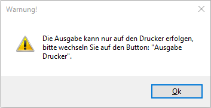
Ø Kundeninfo
In diesem Feld kann eine 20-stellige Eingabe erfolgen, die auch in die XML-Datei übernommen wird und auf dem Übertragungsbericht von FINANZOnline angezeigt wird.
Ø Gesamtrückziehung
Im Falle einer "Gesamtrückziehung" (= gesetzte Checkbox) enthält die erzeugte XML-Datei ausschließlich den entsprechenden Eintrag, jedoch keinerlei Konten oder Summen.
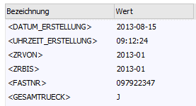
Hinweis
Mit der Gesamtrückziehung wird bekannt gegeben, dass vorhergehende Übermittlungen nicht mehr relevant sind.
Nach Bestätigung der Ausgabe der ZM durch Drücken des OK-Buttons, wird das Fenster "FINANZ Online" (Details entnehmen Sie den Kapitel "FINANZ Online") geöffnet, das die elektronische Übermittlung der Zusammenfassenden Meldung erleichtern soll.
Ø Finanzamt-/Steuernummer des Übermittlers
In diesem Feld kann die Finanzamt-/Steuernummer des Übermittlers eingegeben werden. Das Eingabefeld steht nur dann zur Verfügung, wenn die Checkbox 'Datei für FinanzOnline erzeugen' aktiviert ist. Bei der Ausgabe wird das Feld überprüft, der eingegebene Wert muss 9-stellig numerisch sein, andernfalls wird mit einer Fehlermeldung abgebrochen.
Gültig für Deutschland:
Ist das Länderkennzeichen in den FIBU-Parametern auf Deutschland gesetzt, so stehen Ihnen die Möglichkeiten Formulardruck und ELSTER-Meldung zur Verfügung.
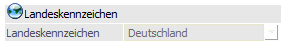
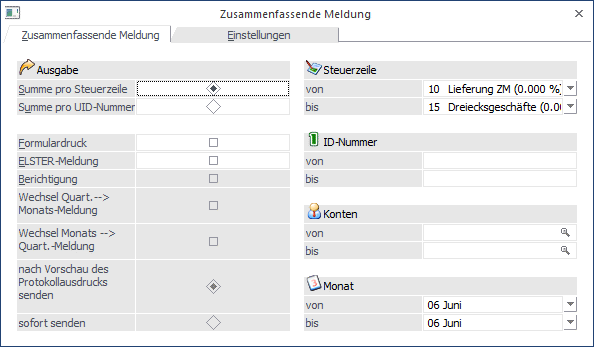
Ø Formulardruck
Wird diese Option gewählt, so wird die Zusammenfassende Meldung auf einem Formular ausgegeben, das vom Bundesamt für Finanzen offiziell genehmigt wurde.
Ø ELSTER-Meldung
Zur Übermittlung der Daten via ELSTER wird diese Option gesetzt.
Dabei werden weitere Optionen freigeschaltet, die nur für die ELSTER-Meldung zur Verfügung stehen.
Ø Berichtigung
Das Kennzeichen "Berichtigung" steht nur bei der ELSTER-Übermittlung zur Verfügung. In die Datei wird das entsprechende Kennzeichen gesetzt, dass es sich um eine berichtigte Meldung handelt.
Zusätzlich werden bei der berichtigten Ausgabe Nullzeilen in die XML-Datei übergeben. Eine Berichtigung ist z.B. dann notwendig, wenn die gemeldete Zeile im falschen Quartal oder bei einer falschen UID-Nr. gemeldet wurde.
Ø Wechsel Quart.--> Monats-Meldung
Ø Wechsel Monats --> Quart.-Meldung
Mit diesen Optionen kann bei der ELSTER-Übermittlung ein Wechsel von Quartals- auf Monatsmeldung bzw. von Monats- auf Quartalsmeldung erfolgen. Üblicherweise wird die ZM monatlich gemeldet. In Ausnahmefällen kann eine Umstellung auf eine Quartalsmeldung erfolgen, sofern die Summe der Bemessungsgrundlagen für diese meldepflichtigen Umsätze nicht zu hoch ist.
Ø nach Vorschau des Protokollausdrucks senden
Wird das ZM-Fenster mit Ok bestätigt, so erfolgt zunächst die Vorschau des ELSTER-Protokolls.
Ø sofort senden
Es erfolgt der direkte Versand mit anschließender Ausgabe des ELSTER-Protokolls.
Einstellungen
Wird das Kennzeichen für die ELSTER-Übermittlung gesetzt, so muss vor dem erstmaligen Erstellen der Datei das Register "Einstellungen" geprüft und angepasst werden. Die hier hinterlegten Angaben werden in die XML-Datei übernommen. Soweit möglich, werden die Eingaben aus dem Mandantenstamm vorbelegt. Die Daten sollten vor der ersten Erstellung der XML-Datei geprüft und ggf. angepasst werden.
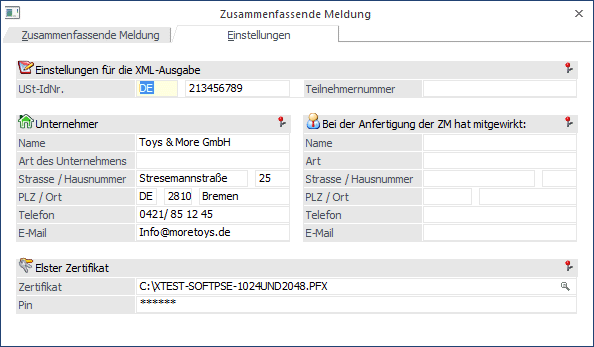
Ø Einstellungen für die XML-Ausgabe
Im Feld USt-IdNr. wird die firmeneigene USt-IdNr. hinterlegt.
Die Teilnehmernummer wird mit der ELSTER-Übermittlung nicht mehr benötigt
Ø Unternehmerdaten
Es werden die Adressdaten aus den Mandantenstammdaten vorgeschlagen und können bei Bedarf noch angepasst werden. Bei einer deutschen Adressangabe muss als Länderkürzel DE eingetragen werden.
Ø Elster Zertifikat
Es muss ein gültiges ELSTER-Zertifikat inkl. Pin hinterlegt werden, damit eine ELSTER-Übermittlung erfolgen kann.
Ø Bei der Anfertigung der ZM hat mitgewirkt
Die hier eingegebenen Informationen werden derzeit bei ELSTER nicht unterstützt.
Bei "Ausgabe Bildschirm" bzw. "Ausgabe Drucker" wird die XML-Datei erzeugt und via ELSTER versendet.
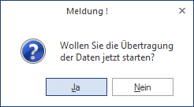
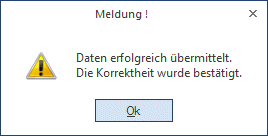
Ist die Übertragung via ELSTER wegen eines Fehlers fehlgeschlagen, wird ein Fehlerprotokoll im Spooler abgestellt.
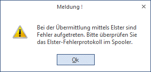
Die übermittelten Dateien sowie ELSTER-Protokoll werden im Verzeichnis Elster unterhalb des WinLine-Verzeichnisses abgelegt.
Buttons
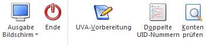
Ø Ausgabe Bildschirm /Drucker
Aus der Auswahllistbox kann gewählt werden, ob die Ausgabe am Bildschirm oder am Drucker durchgeführt werden soll. Standardmäßig wird die Ausgabe auf Bildschirm vorgeschlagen, die auch durch Drücken der F5-Taste gestartet werden kann.
Je nach Einstellung erfolgt die Ausgabe dazu auf Bildschirm oder Drucker, und wird eine Datei für FINANZOnline erstellt oder nicht.
Gedruckt wird auf jeden Fall eine Liste mit den UID-Nr. und den entsprechenden Werten dazu.
Ø Ende
Mittels Ende-Button wird das Fenster geschlossen
Ø UVA-Vorbereitung
Über diesen Button wird die UVA-Vorbereitung geöffnet. Diese muss vor Ausgabe der ZM durchgeführt werden, damit auch alle vorhandenen Buchungen berücksichtigt werden.
Hinweis
Gibt es Buchungen die noch nicht "vorbereitet" wurden, wird automatisch bei Anwählen des OK-Buttons in die UVA-Vorbereitung gewechselt.
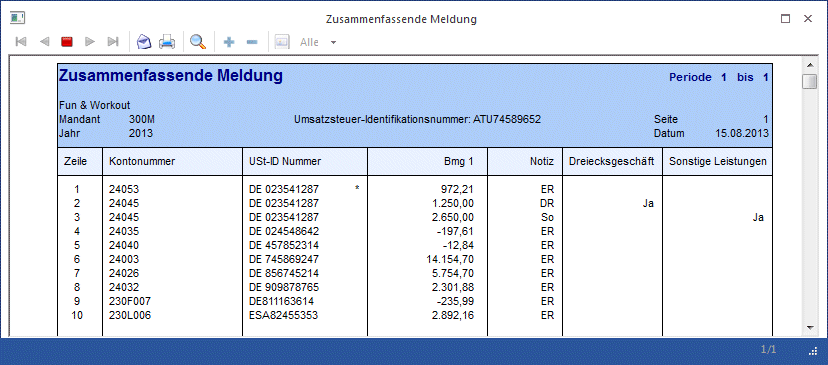
Ist eine UID-Nr. bei mehreren Konten hinterlegt, so wird die Zeile mit der betroffenen UID-Nr. mit einem Stern (*) gekennzeichnet. Der Wert setzt sich dann aus den Summen mehrerer Konten zusammen.
Im Standardformular ist in der Spalte "Notiz" die Variable so definiert, dass die ersten beiden Stellen der Bezeichnung der verwendeten Steuerzeile angedruckt werden.
Wurde eine Steuerzeile der Selektion mit der Option "Dreiecksgeschäft" versehen und diese Steuerzeile auch bebucht, dann wird das Kennzeichen in der dafür vorgesehenen Spalte angezeigt. Ebenso verhält es sich bei Steuerzeilen mit dem Kennzeichen "Sonstige Leistungen".
Ø Doppelte UID-Nummern
Ist eine UID-Nr. bei mehreren Konten hinterlegt, kann dies anhand der Liste "Mehrfach vergebene UID-Nummern" ausgewertet werden:
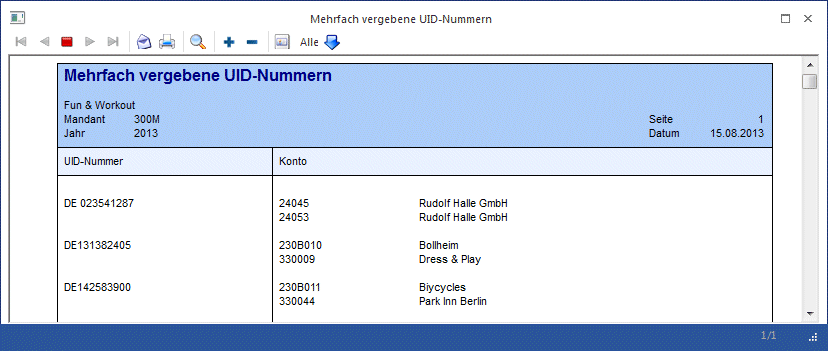
Ø Konten prüfen
Durch Anwählen dieses Buttons werden alle Konten aufgelistet, die mit einer der ZM-Steuerzeilen bebucht wurden, aber keine UID-Nummer hinterlegt haben. Bei dieser Auswertung werden die ggfs. eingestellten Einschränkungen nicht berücksichtigt. D.h. es werden immer alle Perioden und alle ZM-Steuerzeilen geprüft.
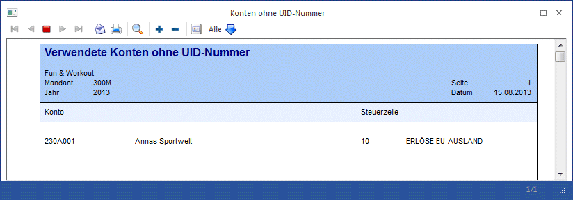
Hinweis
Generell erfolgt die Gruppierung der Werte in der ZM nach UID-Nr.!